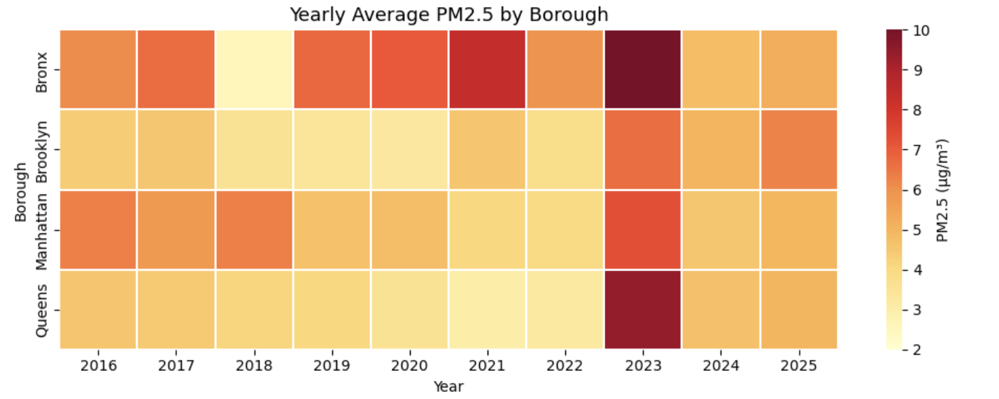

Abstract
In June 2023, New York City briefly recorded some of the worst air quality in the world, even though daily
traffic looked mostly normal. This project asks a simple question: did changes in NYC traffic volume
actually drive PM2.5 levels between 2016 and 2025? Using borough-level data, we compare PM2.5 with
traffic across three periods—pre-COVID, COVID, and recovery—and highlight the 2023 Canadian wildfire event.
Across multiple visualizations, we find no stable relationship between traffic and PM2.5.
During COVID, traffic patterns changed but PM2.5 did not improve in a consistent way, and the sharp 2023 spike
appears clearly tied to wildfire smoke rather than vehicle activity. Our results suggest that while traffic
contributes to pollution on individual days, regional and external factors such as wildfires and
long-range transport are far more important for NYC’s PM2.5 trends.
New York City Overview
New York City is one of the most densely populated urban regions in the world.
With millions of residents, five major boroughs, and heavy daily traffic, air quality is a critical public health priority.

Figure 1. The five boroughs of New York City.
Our analysis aggregates data for the Bronx, Brooklyn, Manhattan, and Queens. Staten Island appears on the
map but is excluded from most plots because of missing or inconsistent traffic records.
What Makes Air Pollution (PM2.5) So Dangerous?
Fine particulate matter, known as PM2.5, consists of microscopic particles smaller than
2.5 micrometers—about 1/30 the width of a human hair. Because they are so tiny, they bypass the body’s natural
defenses and travel deep into the lungs and even into the bloodstream.

Figure 2. PM10, PM2.5, and PM1 penetrating different parts of the respiratory system.
According to the World Health Organization (WHO) and the U.S. Environmental Protection Agency (EPA),
smaller particles pose a far greater health risk:
• PM10 usually stays in the nose and upper airway.
• PM2.5 reaches the bronchi and lung tissue.
• PM1 and ultrafine particles can enter the bloodstream, affecting the heart and other organs.
Extensive medical research (Harvard School of Public Health, 2015–2023) shows that long-term exposure to PM2.5
increases the risk of asthma, heart attacks, stroke, lung cancer, and premature death.
This is why even small changes in PM2.5 levels can drastically affect public health—especially in dense cities like NYC.
Traffic Conditions in NYC
Traffic congestion is one of NYC’s most recognizable features.
Vehicle emissions contribute to PM2.5, especially during peak commuting hours,
but our analysis tests whether traffic alone is enough to explain long-term air quality.

Figure 3. Heavy traffic commonly observed in Manhattan.
Intuitively, it is easy to assume that “more cars = worse air.” The later figures show that this intuition
does not hold when we look at nine years of data across multiple boroughs.
Wildfire Smoke Impact
In 2023, massive wildfires in Canada pushed smoke across the East Coast.
NYC recorded some of the worst PM2.5 levels in modern history, briefly ranking among the most polluted cities
in the world.

Figure 4-a. Canada wildfire event.
Large wildfires inject enormous amounts of fine particulate matter into the atmosphere. Under the right
wind conditions, this smoke can travel hundreds or thousands of kilometers and settle over distant
cities that did not generate the pollution themselves.

Figure 4-b. NYC sky turning orange due to wildfire smoke.
The orange sky over Manhattan in June 2023 corresponds to one of the strongest PM2.5 spikes in our
dataset. Local traffic did not change dramatically on that day, highlighting how external events can
dominate NYC’s air quality.
PM2.5 & Traffic Visualizations

Figure 5. Annual PM2.5 averages (2016–2025).
This heatmap shows how the yearly average PM2.5 changed in each NYC borough from 2016 to 2025. Most years
fluctuate within a moderate range, but 2023 stands out as a clear spike, especially in the Bronx and
Queens. The pattern suggests that air quality does not improve smoothly over time and can be strongly
affected by short-term external events rather than gradual local traffic changes.

Figure 6. Median PM2.5 and traffic volume before, during, and after COVID.
These bar charts compare median PM2.5 and median traffic volume in each borough for three periods:
pre-COVID (2016–2019), COVID (2020–2021), and recovery (2022–2025). Surprisingly, traffic volume
increased during the COVID period in our dataset rather than dropping, and PM2.5 did not show a
matching improvement. In some boroughs, PM2.5 even rises again in the recovery years. This visual supports
our conclusion that changing traffic alone was not enough to significantly reduce PM2.5, and that other
environmental and external influences play major roles.

Figure 7. PM2.5 and traffic volume by year (line chart).
This set of line charts shows PM2.5 and traffic volume from 2016 to 2025 for each borough, with colored
bands indicating pre-COVID, COVID, and recovery periods. Traffic moves irregularly across time, and there
is no clear long-term tendency for PM2.5 to rise or fall in step with it. The sharp 2023 PM2.5 spike stands
out without a corresponding jump in traffic, reflecting the impact of Canadian wildfire smoke. Overall, the
two lines rarely move together, which is consistent with a very weak relationship between traffic and
PM2.5.

Figure 8. Half-year PM2.5 averages (2016–2025).
This chart summarizes average PM2.5 for each half-year. Most periods stay within a similar range, but the
first half of 2023 shows a dramatic increase that matches the wildfire event. This reinforces the idea that
a short but intense external episode can quickly worsen air quality, even when local traffic conditions are
not unusual.

Figure 9. Daily traffic volume vs PM2.5 (scatter with trend line).
Each point represents one day, with traffic volume on the x-axis and PM2.5 on the y-axis. The points form a
wide, diffuse cloud rather than a narrow upward line, and the fitted trend line is almost flat. Busy traffic
days do not consistently show higher PM2.5, and light-traffic days do not always have cleaner air. This
final figure summarizes our main finding: traffic volume is only one piece of the story, and factors such as
seasonal patterns, heating, and especially wildfire smoke have a much stronger influence on PM2.5 levels in
NYC.
Conclusion & Outlook
Our original question was straightforward: does NYC traffic determine PM2.5? After examining
nine years of borough-level data and several complementary visualizations, our answer is
“not really.” We see some local contributions from vehicles, but no stable or strong
relationship between traffic volume and PM2.5 across time.
Instead, our results highlight the importance of external and regional factors. The 2023
Canadian wildfires produced the clearest and strongest PM2.5 signal in the entire dataset, overwhelming the
influence of day-to-day traffic. This suggests that improving NYC air quality requires not only local traffic
policies but also broader strategies that address regional pollution transport, climate-driven wildfire risk,
and building-related emissions.
There are several limitations: we worked with aggregated traffic counts, could not fully separate weekday and
weekend patterns, and did not model meteorological variables such as wind or temperature. Future work could
combine higher-resolution mobility data with weather and satellite-based smoke indicators to build predictive
models of PM2.5. Even with these limitations, our project shows that “more traffic” is a poor shortcut
for “worse air” in NYC, and that the city’s most dramatic air-quality events can arrive from hundreds
of kilometers away.
References
[1] World Health Organization (2021). Global Air Quality Guidelines: PM2.5.
[2] U.S. Environmental Protection Agency (2024). Integrated Science Assessment for Particulate Matter.
[3] Harvard School of Public Health (2015–2023).
Research series on long-term PM2.5 exposure and cardiovascular & respiratory health.
[4] NASA Earth Observatory (2023).
Canadian Wildfire Smoke Reaches the U.S. East Coast.
[5] Heydari et al. (2020).
Estimating traffic contribution to PM2.5 in urban areas. Environment International.
[6] Brook et al. (2010).
Particulate Matter Air Pollution and Cardiovascular Disease. Circulation.
[7] NYC Department of Transportation.
Automated Traffic Volume Counts Dataset.
[8] OpenAQ.
Brooklyn PM2.5 Air Quality Measurements Dataset.